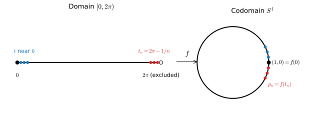

A continuous bijection that is not a homeomorphism
1 Definitions
Let \(X\) and \(Y\) be topological spaces. Subsets of \(\mathbb{R}^n\) carry the subspace topology induced by the Euclidean metric.
Definition 1 (Homeomorphism) A map \(f : X \to Y\) is a homeomorphism if \(f\) is bijective, \(f\) is continuous, and \(f^{-1} : Y \to X\) is continuous.
Continuity of \(f^{-1}\) is a separate requirement. It does not follow from continuity and bijectivity of \(f\), as the following example shows.
2 The example
Example 1 (Wrapping an interval onto the circle) Let \(S^1 = \{ (y_1, y_2) \in \mathbb{R}^2 : y_1^2 + y_2^2 = 1 \}\) and define \[ f : [0, 2\pi) \to S^1, \qquad f(t) = (\cos t, \sin t). \tag{1}\] Then \(f\) is a continuous bijection, but \(f^{-1}\) is not continuous at \((1, 0)\). Hence \(f\) is not a homeomorphism.

2.1 \(f\) is continuous
Its components \(\cos\) and \(\sin\) are continuous on \(\mathbb{R}\), hence on \([0, 2\pi)\).
2.2 \(f\) is injective
Suppose \(f(t_1) = f(t_2)\) with \(t_1, t_2 \in [0, 2\pi)\). Equality of cosines and sines implies \(t_1 - t_2 = 2\pi k\) for some integer \(k\). Since \(|t_1 - t_2| < 2\pi\), \(k = 0\), so \(t_1 = t_2\).
2.3 \(f\) is surjective
Every \((y_1, y_2) \in S^1\) can be written as \((\cos\theta, \sin\theta)\) for some \(\theta \in \mathbb{R}\). Subtracting a suitable integer multiple of \(2\pi\) gives such a \(\theta\) in \([0, 2\pi)\).
2.4 \(f^{-1}\) is not continuous at \((1,0)\)
Let \(g = f^{-1} : S^1 \to [0, 2\pi)\) and, for \(n \geq 1\), \[ t_n = 2\pi - \frac{1}{n} \in [0, 2\pi), \qquad p_n = f(t_n) = \left( \cos\tfrac{1}{n}, \, -\sin\tfrac{1}{n} \right). \] Then \[ \left| p_n - (1,0) \right| = 2 \sin\frac{1}{2n} \to 0, \] so \(p_n \to (1,0)\) in \(S^1\). However, \[ g(p_n) = 2\pi - \frac{1}{n} \to 2\pi \neq 0 = g(1,0). \] Since \(S^1\) and \([0, 2\pi)\) are metric spaces, sequential continuity is equivalent to continuity. Therefore \(g\) is not continuous at \((1,0)\).
Figure 1 shows the mechanism: \(f\) glues the two ends of the interval together, and \(f^{-1}\) must tear them apart again.
2.5 No homeomorphism exists between these spaces
The failure is not specific to \(f\): no map \(h : S^1 \to [0, 2\pi)\) whatsoever is a homeomorphism. Two independent arguments follow.
- Compactness. \(S^1\) is closed and bounded in \(\mathbb{R}^2\), hence compact. \([0, 2\pi)\) is not closed in \(\mathbb{R}\), hence not compact. A continuous image of a compact space is compact, so there is no continuous surjection \(S^1 \to [0, 2\pi)\).
- Connectedness. Removing the point \(\pi\) disconnects \([0, 2\pi)\) into \([0, \pi)\) and \((\pi, 2\pi)\). Removing any point \(q\) from \(S^1\) leaves a connected set, namely the continuous image of an open interval of length \(2\pi\). A homeomorphism \(h\) would restrict to a homeomorphism between \(S^1 \setminus \{h^{-1}(\pi)\}\) and \([0, 2\pi) \setminus \{\pi\}\), which is impossible.
3 When a continuous bijection is automatically a homeomorphism
The example relies on the domain being non-compact and the map changing dimension. Removing either feature eliminates the pathology.
Theorem 1 (Compact domain, Hausdorff codomain) Let \(X\) be compact, \(Y\) Hausdorff, and \(f : X \to Y\) a continuous bijection. Then \(f\) is a homeomorphism.
Proof. It suffices to show that \(f\) maps closed sets to closed sets, because then \((f^{-1})^{-1}(C) = f(C)\) is closed for every closed \(C \subseteq X\). A closed subset \(C\) of the compact space \(X\) is compact. Its image \(f(C)\) is compact because \(f\) is continuous. A compact subset of a Hausdorff space is closed. Hence \(f(C)\) is closed.
In Example 1, \(Y = S^1\) is Hausdorff but \(X = [0, 2\pi)\) is not compact, so Thrm. 1 does not apply.
Theorem 2 (Invariance of domain (Brouwer)) Let \(U \subseteq \mathbb{R}^n\) be open and \(f : U \to \mathbb{R}^n\) continuous and injective. Then \(f(U)\) is open and \(f : U \to f(U)\) is a homeomorphism.
The proof requires algebraic topology and is omitted. In Example 1, the domain is one-dimensional while the codomain lies in \(\mathbb{R}^2\), so Thrm. 2 does not apply.
4 Relevance to continuum mechanics
A deformation \(\boldsymbol{\chi} : \mathcal{B}_0 \to \mathbb{R}^3\) is assumed continuous and injective. It is a bijection onto its image \(\mathcal{B} = \boldsymbol{\chi}(\mathcal{B}_0)\). Whether \(\boldsymbol{\chi}^{-1} : \mathcal{B} \to \mathcal{B}_0\) is also continuous is settled by the two theorems above.
- If \(\mathcal{B}_0\) is an open subset of \(\mathbb{R}^3\), Thrm. 2 applies with \(n = 3\).
- If \(\mathcal{B}_0\) is the closure of a bounded open set, it is compact. Since \(\mathbb{R}^3\) is Hausdorff, Thrm. 1 applies.
In either case, \(\boldsymbol{\chi}\) is a homeomorphism onto \(\mathcal{B}\). Material points that are close in the current configuration were close in the reference configuration, and the inverse motion \(\mathbf{X} = \boldsymbol{\chi}^{-1}(\mathbf{x})\) is continuous. Example 1 shows that this conclusion is a genuine consequence of the setting, not a property of every continuous bijection.